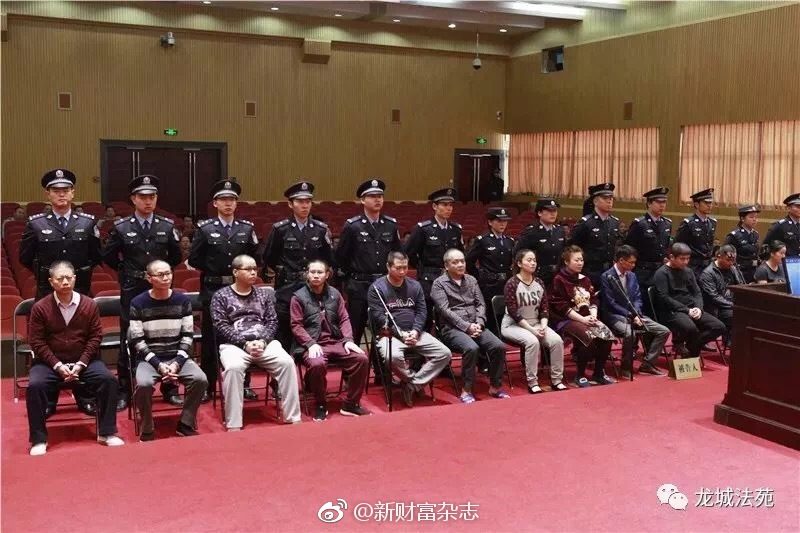
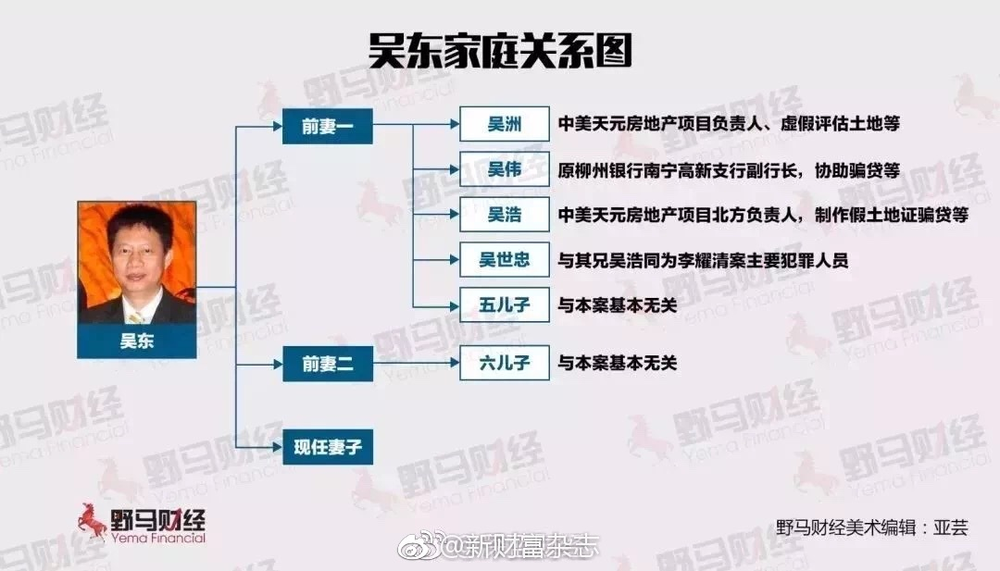
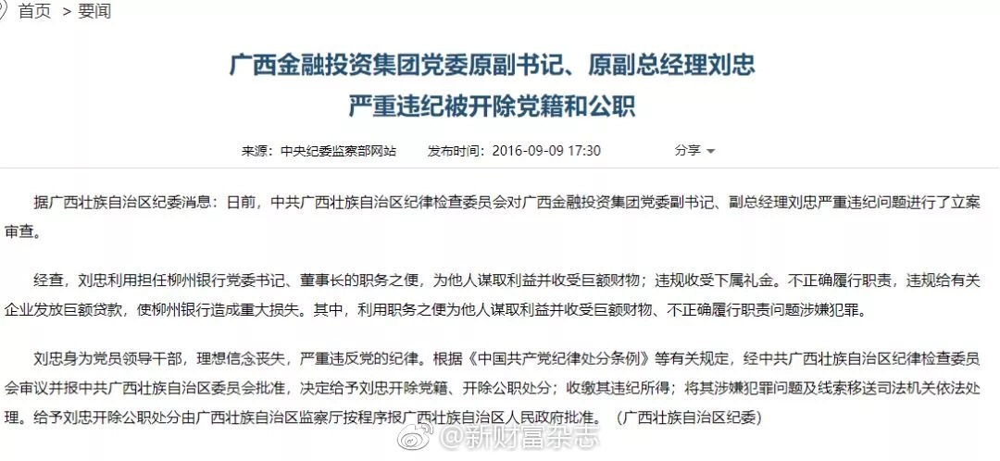

#创业#有朋友发来个美使馆举办的女性创业者讲座，虽然最近我有很多时间，也在找机会四处跟人聊，但这个很对口的活动还是没报名。因为参加活动，我更看重和人交流，或者小规模活动可以有大量互动的，或者我是讲者之一。至于那种只是在下面坐着听的活动，不如去看本书了。
又听说一个#创业#朋友，因为投资款迟迟没到账，把北京一套房子做抵押，贷了一百万先发工资，也就够发俩月工资。所以，创业者时不时会问自己为什么要创业这个问题，挺正常的。朋友也问了我个问题：如果这事做了后，你有坐牢的风险，你干不干？我说要看什么情况，如果只是打工，傻子才干这种收益低风险大的事情，但是如果做为创始人，就等这个钱给公司续命，那我很有可能干。包括之前跟另外一位创业者聊起的酒桌上拼酒，喝不喝？如果是打工，肯定不干，为了份工作这么做不值得。但是我也说，做为等米下锅的创业者，这酒你是不想喝也得喝下去。我也时不时问下自己为什么要创业这个问题。
“从银行拿到巨额贷款的吴东家族，用从银行贷出的钱购买了柳州银行、北部湾银行、桂林银行的股份，并一度成为上述三家银行的大股东之一。” - 这个描述真是意味深长。@新财富杂志:【420亿惊天骗贷案判了：13人获刑！富商儿子雇凶砍杀银行董事长，真相终于被曝光】回首整个案件，从案发到一审判决，已经过去了四年多。如今，犯罪分子终于得到了应有的惩罚，结合判决和庭审证据，本文试图还原出骗贷案的冰山一角。420亿惊天骗贷案判了：13人获刑！富商儿子雇凶砍杀银行董事长，真相终于被曝光 
有朋友之前呆过的两家创业公司，现在估值都过十亿。这两家他都是因为跟老大闹掰而离开，所以这次就决定按自己心愿做一家公司，目前发展态势不错。我说：“有可能你跟女性合作得更好些”。他的联合创始人在旁接上一句：“一山不容二虎，除非一公一母”。这个联合创始人是女性。